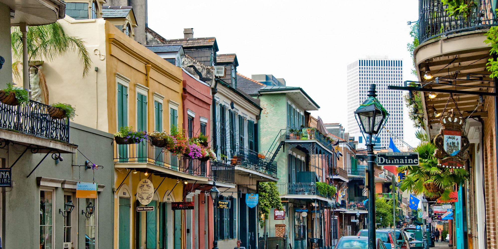

Ofertas especiales
Encuentre la información que necesita para planificar su próximo viaje sin estrés. Estos consejos lo guiarán paso a paso si va de vacaciones con su familia, solo o con su pareja.
Blues, Jazz & Soul
de Chicago a New Orleans
Alojamiento en hoteles turista según itinerario + Recorrido en autocar con guía de habla hispana + Seguro básico de viaje Desayunos + Traslado de llegada + Visita Panorámica en Chicago y New Orleans + Traslado Nocturno: Barrio “The Loop” en Chicago. Entradas: Circuito en Indianápolis, Destileria de Bourbon en Jim Beam, Museo Nacional de los Derechos Civiles, en Memphis, Museo Estatal de la Cultura Rural en Jackson, Plantación en Oak Plantation.
Observaciones
Incluye Tasas e Impuestos. Valores sujetos a cambio sin previo aviso.
China
Pasado, Presente y Futuro
Alojamiento en hoteles turistas según itinerario + Recorrido en autocar con guía de habla hispana + Seguro básico de viaje + Desayunos + Traslado de llegada y de salida + Excursión: Paseo en triciclo por barrios tradicionales y Gran Muralla China en Beijing + Visita panorámica en Beijing, Xian y Shanghai + Entradas: Funicular y Gran Muralla China, Palacio Imperial, Colina del Carbón, Palacio de Verano, Templo del Cielo, Ceremonia del Té, masaje en los pies y clases de Tai Chi en Beijing; Museo de Guerreros de Terracota en Xian. Jardín Yuyuan en Shanghai + Vuelos y traslados en clase turista de Beijing a Xian y Xian a Shanghai + 6 Almuerzos.
Observaciones
Incluye Tasas e Impuestos. Valores sujetos a cambio sin previo aviso.
Rumbo al Sur
De Nueva York a New Orleans

Alojamiento en hoteles turistas según itinerario + Recorrido en autocar con guía de habla hispana + Seguro básico de viaje + Desayunos + Traslado de llegada + Visita Panorámica en Nueva York, Chicago y New Orleans + Traslados Nocturnos a Times Square en New York y Barrio “The Loop” en Chicago + Entradas: Circuito en Indianapolis, Destileria de Bourbon en Jim Beam, Museo Estatal de la Cultura Rural en Jackson, Museo Estatal de la Cultura Rural en Jackson, Plantación en Oak Plantation.
Observaciones
Incluye Tasas e Impuestos. Valores sujetos a cambio sin previo aviso.